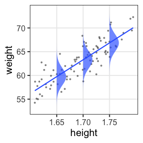
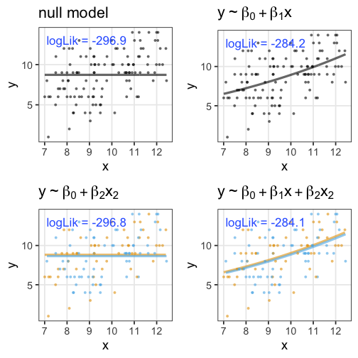

統計モデリング概論 DSHC 2021
(Graduate School of Life Sciences, Tohoku University)
前章で見た統計モデル
確率変数$X$はパラメータ$\theta$の確率分布$f$に"従う": $X \sim f(\theta) $
e.g., ある植物が作る種の数$X$は平均値$\lambda$のポアソン分布に従う:

これを一般化線形モデル(GLM)として見ることもできる。
一般化線形モデル(GLM)として記述してみる
個体$i$の種子数$y_i$は平均値$\lambda_i$のポアソン分布に従う。
平均値$\lambda_i$は他のデータによらず$\beta_0$で一定。

種子数をY軸にして、式を2つに分けただけ…?
説明変数を含むモデルを見ればご利益が分かるかも。
説明変数が1つある一般化線形モデル
個体$i$の種子数$y_i$は平均値$\lambda_i$のポアソン分布に従う。
平均値の対数$\log(\lambda_i)$はその個体の大きさ$x_i$に比例する。


この場合は単回帰。説明変数が複数あると重回帰。
複数の説明変数を同時に扱う重回帰
\[\begin{split} y_i &= \text{Poisson}(\lambda_i) \\ \log(\lambda_i) &= \beta_0 + \beta_1 x_{1i} + \beta_2 x_{2i} + \ldots \end{split}\]
気温も湿度も高いほどビールが売れる、とか
今度は確率分布と連結関数を変えてみよう。
ロジスティック回帰
- 確率分布: 二項分布
- 連結関数: $\text{logit}(p) = \log \frac {p} {1 - p}$
何かの成否に対する何かの因子の影響、とか
街角の10人のうち何人半袖か。
その日の気温によって割合が変化。
\[\begin{split} y_i &\sim \text{Binomial}(n,~p_i) \\ \text{logit}(p_i) &= \beta_0 + \beta_1 x_i \end{split}\]

ロジスティック回帰 (狭義)
- 確率分布: ベルヌーイ分布 ($n = 1$ の二項分布)
- 連結関数: $\text{logit}(p) = \log \frac {p} {1 - p}$
何かの成否に対する何かの因子の影響、とか
風が吹けば桶屋が儲かる。
\[\begin{split} y_i &\sim \text{Bernoulli}(p_i) \\ &= \text{Binomial}(1,~p_i) \\ \text{logit}(p_i) &= \beta_0 + \beta_1 x_i \end{split}\]

一般線形モデル (“化”無し) はGLMの一種
- 確率分布: 正規分布
- 連結関数: 恒等関数(なにもせずそのまま)
\[\begin{split} y_i &\sim \mathcal{N}(\mu_i,~\sigma^2) \\ \text{identity}(\mu_i) &= \beta_0 + \beta_1 x_i \end{split}\]

最小二乗法の直線あてはめと同じ。 分散分析もこの枠組で考えられる。
分散分析 (Analysis of variance, ANOVA) as GLM
質的な説明変数を持つ正規分布・恒等連結のGLM、と解釈可能。
指示変数 (0 or 1) に変換してから重回帰する。
| 天気 | → | $x_1$ ☀️ 晴れ | $x_2$ ☔️ 雨 |
|---|---|---|---|
| ☁️ くもり | 0 | 0 | |
| ☀️ 晴れ | 1 | 0 | |
| ☔️ 雨 | 0 | 1 |
\[\begin{split} y_i &= \mathcal{N}(\mu_i,\sigma^2) \\ \mu_i &= \beta_0 + \beta_1 x_{1i} + \beta_2 x_{2i} \end{split}\]
くもり☁️ $\beta_0$ を基準に、晴れの効果☀️ $\beta_1$ と雨の効果☔️ $\beta_2$ が求まる。
GLMなら確率分布・連結関数を変えてもっと柔軟にモデリングできる。
共分散分析 (Analysis of covariance, ANCOVA) as GLM
質的変数と量的変数を両方含むGLM、と解釈可能。
正規分布・等分散・恒等連結などが仮定される。

GLMなら確率分布・連結関数を変えてもっと柔軟にモデリングできる。
一般化線形モデル(GLM)ふりかえり
確率分布・連結関数を変えて柔軟にモデリングできる。
特定の組み合わせには名前がある。
| 名前 | 確率分布 | 連結関数 | 説明変数 |
|---|---|---|---|
| ポアソン回帰 | ポアソン分布 | log | |
| ロジスティック回帰 | 二項分布 | logit | |
| 一般線形回帰 | 正規分布 | 恒等 | |
| 分散分析 | 正規分布 | 恒等 | 質的変数 |
| 共分散分析 | 正規分布 | 恒等 | 質的変数+量的変数 |
ほかにもいろいろある。
データはひとつ、モデルはたくさん
どう選ぶ？
- メカニズム的に納得できるものを選ぶ
- ポアソン過程のカウントならポアソン分布、間隔ならガンマ分布
- n回中k回のように割合的なカウントなら二項分布
- データを可視化してみて、それっぽい形のやつを選ぶ
- 左右対称のひと山ならとりあえず正規分布
- 負の値を取らないならガンマ分布
- 直線的か、指数関数的か、頭打ちか、などなど
客観的な指標もほしい。
モデルの尤もらしさといえば…
尤度 (likelihood)
あるモデル$M$の下でそのデータ$D$が観察される確率:
$\text{Prob}(D \mid M)$
データ$D$を固定し、モデル$M$の関数とみなしたものが尤度関数:
$L(M \mid D)$
モデルの構造も固定してパラメータ$\theta$だけ動かす場合はこう書く:
$L(\theta \mid D)$ or $L(\theta)$
対数尤度 $\log L$ の形にしたほうがいろいろ便利。
各モデルで最適なパラメータを探して、比較:
$\log L^* (M_1) \text{ vs. } \log L^* (M_2) \text{ vs. } \log L^* (M_3) \ldots$
たしかに尤度はあてはまりの良さを表してそう
この場合は直線回帰よりもポアソン回帰が良さそう:

この調子で、より尤度の高いモデルを探していけばいいだろうか？
あてはまりが良ければいいってもんでもない
- 過剰適合 / 過学習 / overfitting
- パラメータを増やせば現データへの適合度・尤度を高くできるが、
予測・理解の役には立たなくなる。

帰無モデル: 説明変数なし。切片のみ。
飽和モデル: データ点の数 ≤ パラメータの数。“データ読み上げ”的モデル
説明変数を加えても尤度があまり改善されない場合
種の数 $y$ は体サイズ $x$ で回帰すると良さそう。
観察時の天気 $x2$ (色) も考慮すると尤度は上がるけど……?

AIC: 赤池情報量基準
\[\begin{split} \text{AIC} &= D + 2k \\ &= -2 \log L^* + 2k \end{split}\]
- $D$: 逸脱度 deviance
- $k$: パラメータ数
- AICが小さいほど良いモデル。
- 尤度は上げたい(逸脱度は下げたい)。
- パラメータ数 $k$ が増えるとペナルティ。
未知のデータへの予測誤差が小さくなるような補正。
ほかの情報量基準
- BIC
- WAIC
- WBIC
モデル選択の心構え
「正しい」ものを選べるわけではない。
All models are wrong, but some are useful. — George E. P. Box
予測・理解に useful なものを何らかの基準で選ぶだけ。
現実的な注意
- 多重共線性(マルチコ)
- 値を変換する。e.g., log
- 割り算した値を使わない。
交互作用
解釈が案外難しいのでむやみに使わない。
GLMまとめ
- 何はともあれ散布図を描く
- 確率分布・連結関数・説明変数を考える
- パラメータを最尤推定する
- 情報量基準を使って良さげなモデルを選ぶ
PythonでGLM
- statsmodels
- 統計モデリング寄り
- AICやp値などの指標も適宜計算してくれるので楽
- scikit-learn
- 機械学習寄り
- 回帰以外のさまざまな手法も統一的な書き方で使える
GLM練習問題
ポアソン分布のはずなのに、おかしい
生存種子
二項分布・ポアソン分布なら平均が決まると分散も決まる。
個体差が過分散を起こしてるっぽい。
個体差をモデルに組み込みたい
個体差をそのままモデルに組み込むと過剰適合
(パラメータ数 ≥ サンプルサイズ)
個体差を「平均0、標準偏差$s$の正規分布」としてモデル化
パラメータ1つの追加で済む
一般化線形混合モデル GLMM
固定効果と変量効果(random effect)が混合したモデル
混合分布
積分
ポアソン-ガンマ混合分布
負の二項分布に一致
固定効果にするか、変量効果にするか
推定したパラメータを予測に使うなら固定効果
- 予測に使えそうなので固定効果向き
- 連続値
- 性別、職業など
- 予測に使えないので変量効果向き
- たまたま取れた個体たち
- たまたま分けたグループ {A, B, C}
GLMMまとめ
- GLMは統計モデリングの考え方の基礎
- GLMMは現実のデータ解析に向けた強化
- グループ差の推定などはGLMMでも厳しい

参考文献
- データ解析のための統計モデリング入門 久保拓弥 2012
- 統計学を哲学する 大塚淳 2020
- データ解析のための数理モデル入門 江崎貴裕 2020
- 分析者のためのデータ解釈学入門 江崎貴裕 2020
- RとStanではじめる ベイズ統計モデリングによるデータ分析入門 馬場真哉 2019
- StanとRでベイズ統計モデリング 松浦健太郎 2016
- 科学とモデル—シミュレーションの哲学 入門 Michael Weisberg 2017
(原著: Simulation and Similarity 2013)